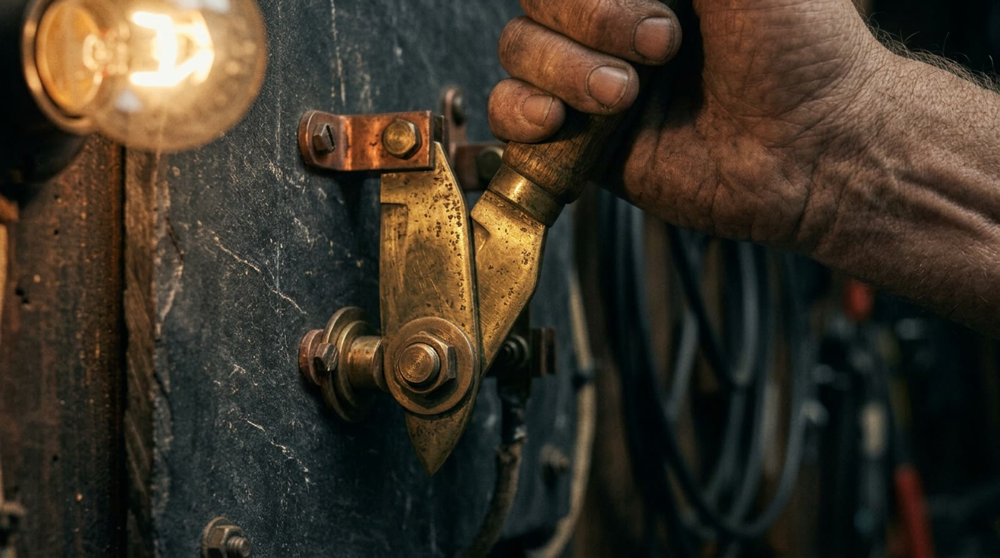
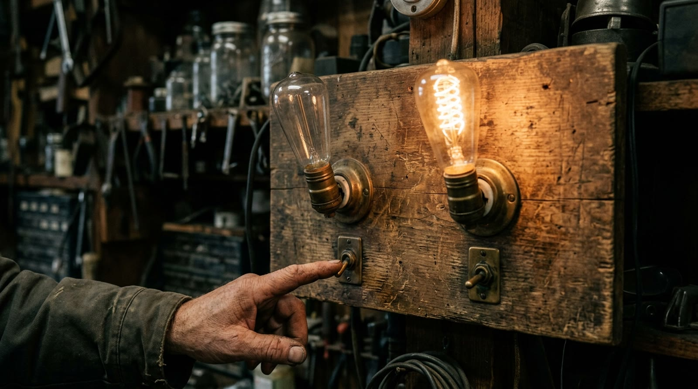
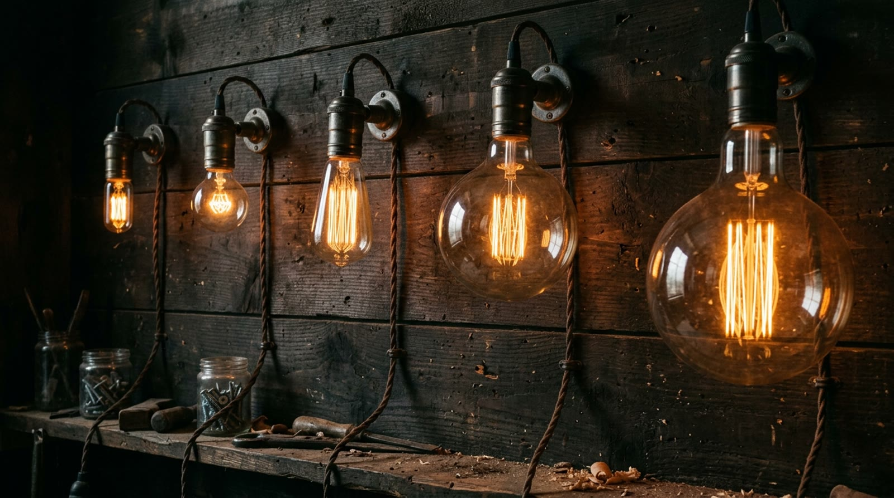
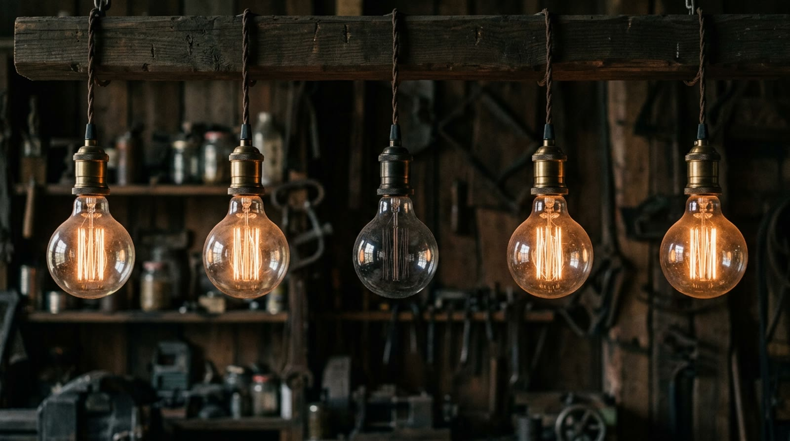

extra 04 · fora da linha do tempo
O Sistema Binário
Tudo o que uma lâmpada sabe dizer é aceso ou apagado. Este extra mostra como só isso conta qualquer número — e o que o vai-um faz quando o grupo enche com dois. Avance apertando Próximo.
a peça · só dois jeitos
Aceso ou apagado

reconstituição realista · não é fotografia de época
a regra · encheu o grupo de dois, sobe um
Dois vira um

com dez algarismos a casa enche no 9; com dois, ela enche no 1 — o vai-um só chega mais cedo
demonstração · o vai-um trabalhando
Deixa contar
Aperte começar e repare: aqui a casa enche com UMA lâmpada só — o vai-um dispara o tempo todo.
0
de 7 pra 8, três lâmpadas viram de uma vez: é o mesmo estouro do 99 pra 100 — só que aqui ele acontece a toda hora
a escada · cada casa dobra
Um, dois, quatro, oito

reconstituição realista · não é fotografia de época
demonstração · a mesma lâmpada, outra casa
O valor mora na casa
Uma lâmpada acesa na casa do 1. Aperte dobra e veja o valor mudar de casa.
no papel é igual: 101 não é "cento e um" — é 4 + 1 = 5, porque cada casa dobra
o detalhe que faltava · a apagada no meio
Apagada também é informação

é o mesmo serviço do algarismo 0: escrever "esta casa está vazia" — em 101, o apagado do meio é o que separa o 5 do 3
demonstração · o empurrão em cascata
Somar é empurrar
Cinco: 4 + 1 acesas. Somar é empurrar UM de cada vez — o vai-um faz o resto. Aperte soma 1.
5
preste atenção no 7 + 1: a fileira inteira vira de uma vez — toda soma grande é feita desses empurrões
sua vez · três números
Acenda você
Clique nas lâmpadas e monte o número.
0
o 10 deixa a casa do 1 apagada e o 21 acende casa sim, casa não: repare que montar o apagado também é decisão
o fecho · por que logo dois?
Dois é o grupo à prova de erro
o meio-termo
Podia existir a lâmpada meio acesa valendo meio? Podia — mas aí qualquer oscilação vira leitura errada. Com dois estados, mesmo velha, fraca e piscando, a lâmpada ainda se lê certo: aceso ou apagado.
o preço
Só ter dois algarismos custa comprimento: trezentos e quarenta e sete vira 101011011, nove casas. Troca-se papel por segurança — e a troca compensa sempre que errar sai caro.
onde a analogia quebra
A lâmpada é só o exemplo: qualquer coisa com dois jeitos conta igual — chave aberta ou fechada, furo ou liso, cheio ou vazio. O sistema não precisa de luz nenhuma; precisa de um sim e um não combinados. E o que dá pra construir empilhando sim-e-não… rende outra conversa.